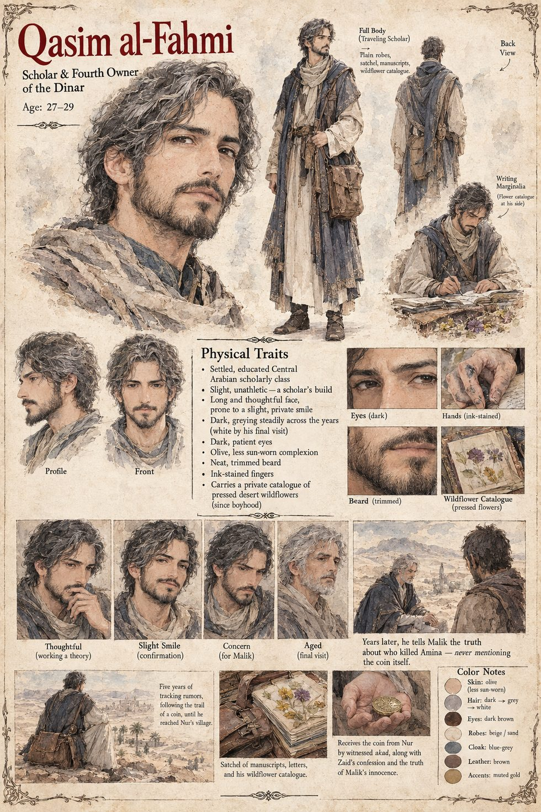

Qasim al-Fahmi
Scholar · the dinar's fifth owner · keeper of a catalogue of pressed desert wildflowers since boyhood · twenty-seven to twenty-nine by his sheet
A scholar whose long and only moderately respected career rests on the conviction that impossible stories are almost always true stories badly told, and that the correct response to a miracle is neither worship nor dismissal but inventory: where it was seen, in what order, in whose hands, and what changed hands alongside it each time it moved. He first hears of the coin five years before he holds it, as a much younger scholar in a date-market three wells east of Malik's grazing grounds, where children are chanting a rhyme about a coin that will not stay in any grave; he dismisses it. What catches him a year later is not the impossibility but the coincidence of a second report, from another province, of a different object with the same property. He keeps, and talks about with a warmth he brings to nothing else in his professional life, a private catalogue of desert wildflowers begun in boyhood, in which the small yellow ones wear their petals in threes and fives and eights and thirteens and never in fours or sevens, a regularity he once spent a season of evenings failing to explain and decided was simply how the desert counted.
He builds the inventory over five years in the margins of unrelated manuscripts and on the backs of letters he never sends, following the coin through a shepherd's marriage and divorce, a murdered woman, a war he watches from a careful distance take the shape he had more or less predicted, and a dead thief's mistress, and he arrives at last in Nur's village as a collector of old coinage. She is waiting for him. The akad is witnessed by the village well-keeper and a passing grain-merchant, and she gives him the thief's name and the fact of an innocent man held for almost two years. He writes the account that night, before he lets himself look again at the coin in his bag, and has it riding north by a paid courier before the week is out; within the month a notarized account under his own seal reaches the garrison captain, who spends eleven days confirming what he can before he releases Malik.
Only then does he test the coin. He scores its face with a blade and watches it return as scarred as he left it; he spends it nine times in nine towns in one season and it returns nine mornings running; he gives a very large sum to four almshouses in a week, waiting with something close to anxiety to learn whether pure generosity will break the rule, and it comes back anyway. He concludes that it recognizes exactly two events, a witnessed akad or an owner's death passing it to whichever hand next closes around it, and nothing else. Wealth, he decides, was not one test but a different test for each hand: one Zaid failed outright, one Amina had too little time to finish, and one he suspects he is still taking himself. If the rule is bound to a single nameable object, then unmaking the object past recognition should void the rule. He does not go to Malik, because a man once accused of murdering for this coin would not survive the verses that would follow if a scholar traced its whole history back to him and delivered it into his hands a second time. He melts it over three days in a smith's forge he pays for, swearing the smith to secrecy with a sum the man will be grateful for and mystified by for the rest of his life, then carries the cooled metal three days further into open waste and scatters it handful by handful across a dune that changes shape every season. He sits through the following dawn with both pockets turned inside out, and when noon passes with his hands still empty, he lets himself feel something he would not have called relief in front of anyone who might have written it down.
Years later, old himself and under the same cover story, he finds Malik at a modest grazing ground and tells him the one thing he never dared send by letter, a dead thief's name and the four sentences of a confession that freed him, and does not mention the coin. Malik asks him to stay for the evening meal, which neither man thinks to note is the second time a stranger has been fed at that poor man's fire without being told why he was welcome.
The sheet draws him in his late twenties, slight and unathletic, a scholar's build, with a long, thoughtful face prone to a slight private smile, dark hair greying steadily across its panels and white by his last visit, dark patient eyes, an olive and less sun-worn complexion, a neat trimmed beard and ink-stained fingers, in plain beige-and-sand robes under a blue-grey cloak, with a brown leather satchel and boots; the satchel holds manuscripts, letters and the wildflower catalogue. The manuscript gives no age, so the band and the greying are the sheet's. The sheet's title calls him the dinar's fourth owner; by the manuscript's five holders and five transfers he is the fifth, and this entry follows the manuscript.